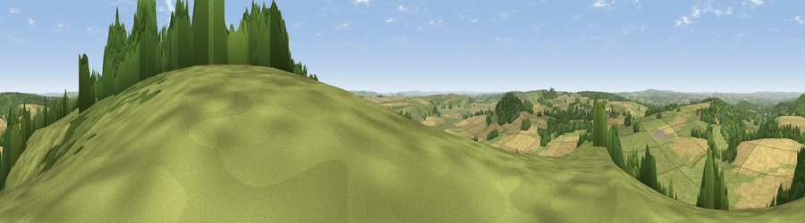

Brimsdown Hill
#6160 in England · top 5% of its area beats it · near Maiden BradleyThe view, rendered

A 360° render of this exact spot computed from the terrain model, tree cover and land cover — summer colours, afternoon light, calibrated against photographs of famous viewpoints. Real trees, hedges and buildings will differ in detail.
The panorama
Grey silhouette: terrain skyline in each direction (720 bearings, Earth curvature and refraction included). Dashed green: skyline with trees (+15 m) and buildings (+8 m) as obstacles. Blue strip: how far the ground is visible on each bearing.
Where the view opens
Wedge length = distance to the farthest visible ground on that bearing (vegetation-aware). Rings at 10, 25 and 50 km.
What fills the view
49% grassland · 33% cropland · 17% woodland ·
Angular shares of the visible panorama (visual magnitude), not map area. Landscape diversity 0.45 (0–1 Shannon).
Key numbers
More beautiful places nearby
The staircase of upgrades: each row has a higher view potential than everything closer. Driving times are estimates from straight-line distance, calibrated against real road routing — check an actual route before setting out.
| Place | Direction | Drive | Score |
|---|---|---|---|
| Viewpoint near Maiden Bradley | SE · 1 km | ~2 min | 69.6 |
| Viewpoint near Monkton Deverill | ESE · 3 km | ~6 min | 70.9 |
| Long Knoll | WSW · 4 km | ~9 min | 74.6 |
| Cley Hill | NNE · 6 km | ~13 min | 76.8 |
| Viewpoint near Lamyatt | WSW · 16 km | ~28 min | 77.8 |
| Viewpoint near Berwick St John | SSE · 21 km | ~35 min | 78.2 |
| Beacon Batch | WNW · 38 km | ~57 min | 79.4 |
| Bleadon Hill [Loxton Hill] | WNW · 49 km | ~70 min | 79.6 |
51.15197, -2.25513 · source: osm peak · position refined by local search. Computed location — check access rights before visiting.